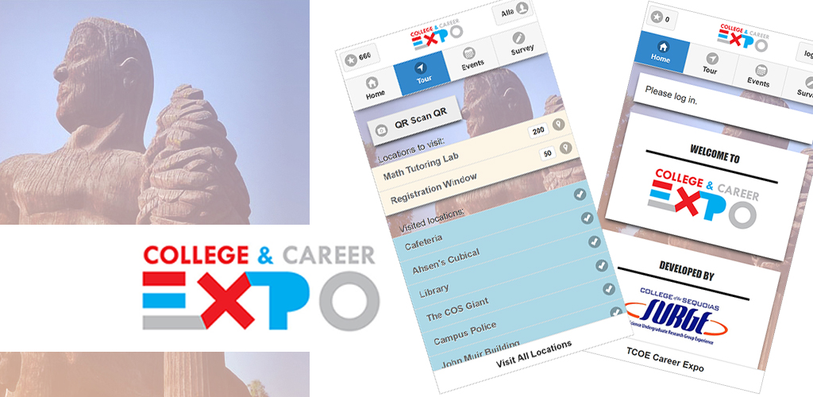

TCOE Career Expo App.
An application designed for the TCOE College and Career Expo.
Tour COS and scan the QR codes at each location for points. The more points
you earn, the better chance you have in the drawing for prizes!
Privacy Policy: This app collects and transmits text only from QR codes detected by the camera. No personal user data nor camera photos are collected or shared in any way.

This is a joint project between TCOE and COS SURGE FNL.